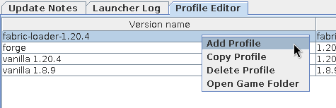
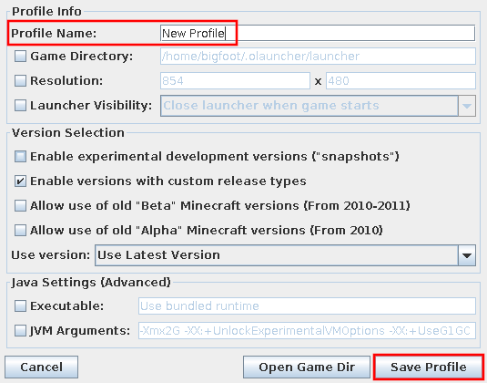
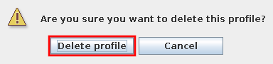

-
Manual Index
-
Manage Microsoft Accounts
-
Manage Launcher Profiles
-
Select the Game Version
-
Change RAM Allocation
-
Collect Launcher Logs
-
Manage a Minecraft Profile
|
Manage Launcher Profiles
A profile is a specific configuration of Minecraft. It includes information such as the game version, launch arguments, and game directory.
This page will guide you through creating, editing, and deleting launcher profiles. See 3. Select the game version for more details on choosing a game version.
Table of Contents
- Create a Profile
- Edit a Profile
- Delete a Profile
What you will Need
You will need to be logged into the launcher.
Create a Profile
-
Switch to the Profile Editor tab, which can be found at the top of the screen as seen in Figure 1.

Figure 1: Profile editor tab
-
Right-click and choose Add Profile.
If you would like to clone a profile instead, select a profile, then right-click and choose Copy Profile.
-
Type a name for the new profile in the Profile Name field.

Figure 2: Profile editor window
-
Click Save Profile.
The profile should be saved! You may now select and play that profile.
Edit a Profile
-
Switch to the Profile Editor tab as seen in Figure 1.
-
Double-click the profile you wish to edit.
A profile editor window as in Figure 2 will appear. Here, you may rename the profile or make any other modifications you would like.
-
Click Save Profile.
Delete a Profile
Note: the profile cannot be recovered once deleted, though the game directory is not cleared. This means that your screenshots, worlds, and mods are preserved.
-
Switch to the Profile Editor tab as seen in Figure 1.
-
Right-click the profile you wish to delete and choose Delete Profile.
-
Click Delete profile on the confirmation dialog that appears as in Figure 3.

Figure 3: Confirmation dialog
|
{kind=link}
{kind=link}
{kind=link}